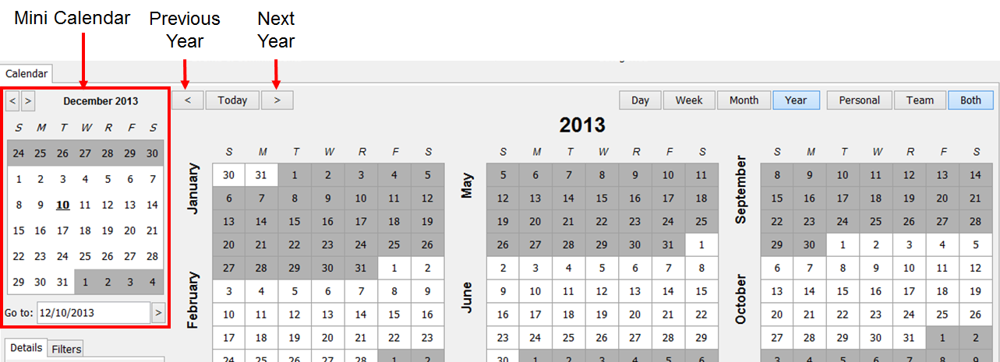

Navigating Year View
The Year view displays a selected year and its days organized by month, but does not show any Events.
To apply this view, select the Year button at the top right of the module.
To navigate between years, click the Previous Arrow button at the top left of the calendar to jump forward by a year or the Next Arrow to jump backward by a year at a time. Alternatively, click on the desired day in the Mini Calendar to jump into week view and display that day. The arrow keys on the keyboard can also be used to navigate one year at a time.
